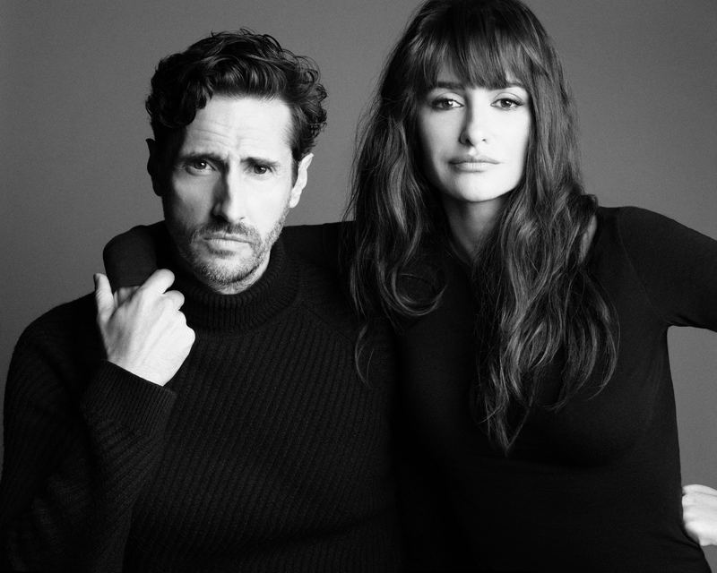

Juan Diego Botto dirige el drama ‘Patricia’, con Penélope Cruz como protagonista y productora, y bajo el paraguas de Netflix

Tras ‘En los márgenes’, el director y la actriz repiten tándem creativo, ahora con el infierno de una mujer que, tras 12 años de maltrato machista, se enfrenta a otro infierno, el judicial, en el que temerá por el bienestar de sus hijos
Cuando acabó el rodaje de En los márgenes, hace cuatro años, Penélope Cruz, protagonista de este drama sobre los desahucios, le confesó a Juan Diego Botto, su director y guionista: “La experiencia para mí ha sido muy positiva. Me gustaría que hiciéramos otra cosa juntos”. Aquel rodaje, por las habituales tensiones, podría haber puesto en riesgo su amistad de décadas, desde que se conocieron de adolescentes en la escuela de interpretación de Cristina Rota, maestra de la primera, madre del segundo. Y, efectivamente, habrá nueva película: el lunes próximo comienza el rodaje de Patricia, protagonizada y producida por Cruz con su empresa Moonlyon bajo el paraguas de Netflix, y escrita y dirigida…